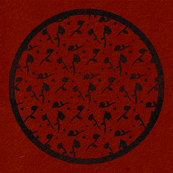
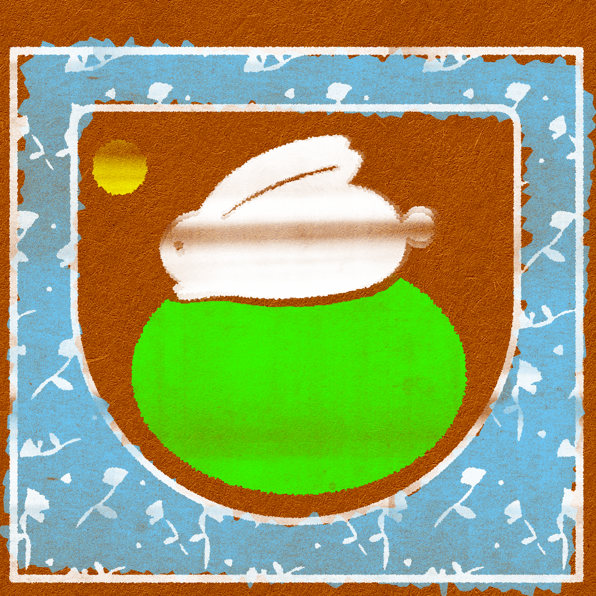
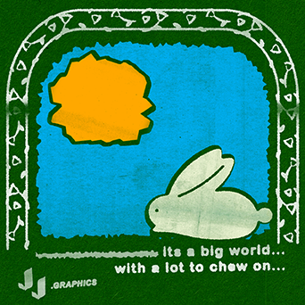
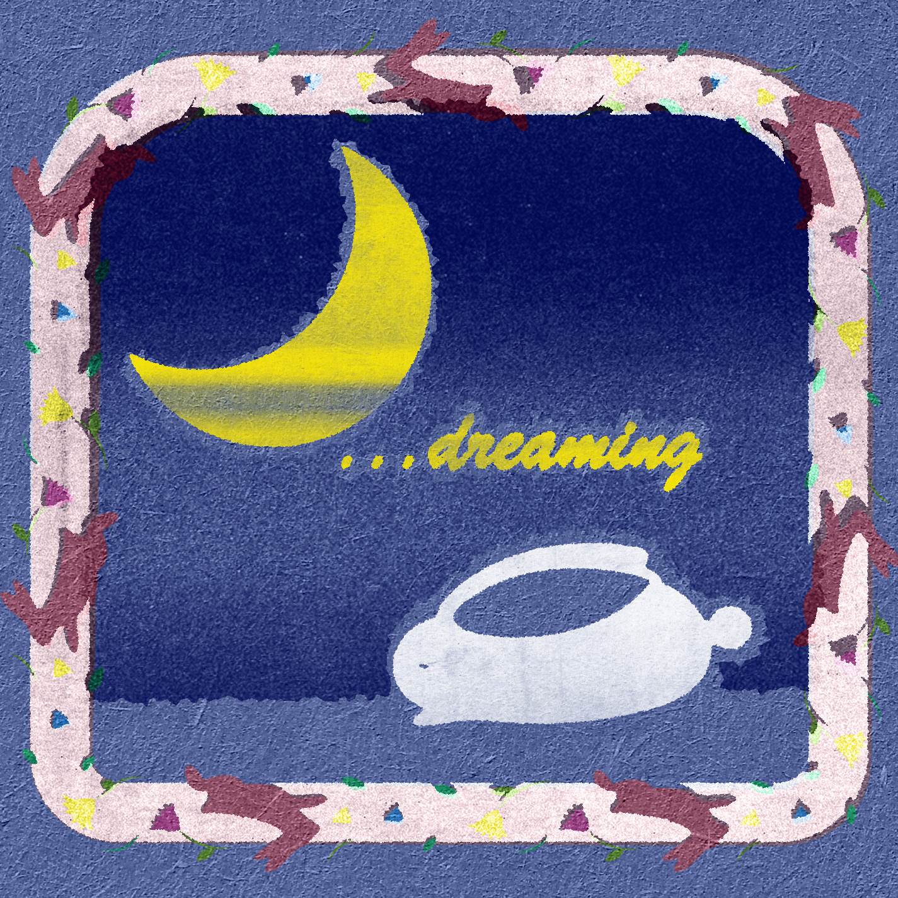

Bunny Stamps
I live near wild rabbits. They are always so fun to look at. In this creative exercise I create realistic looking stamping effects.





I live near wild rabbits. They are always so fun to look at. In this creative exercise I create realistic looking stamping effects.



